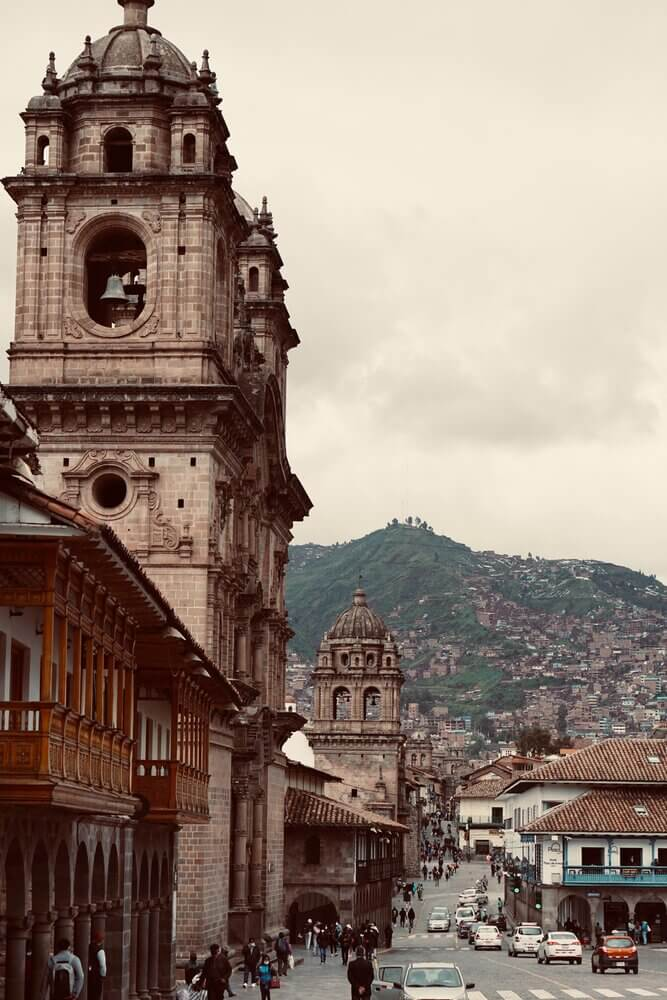
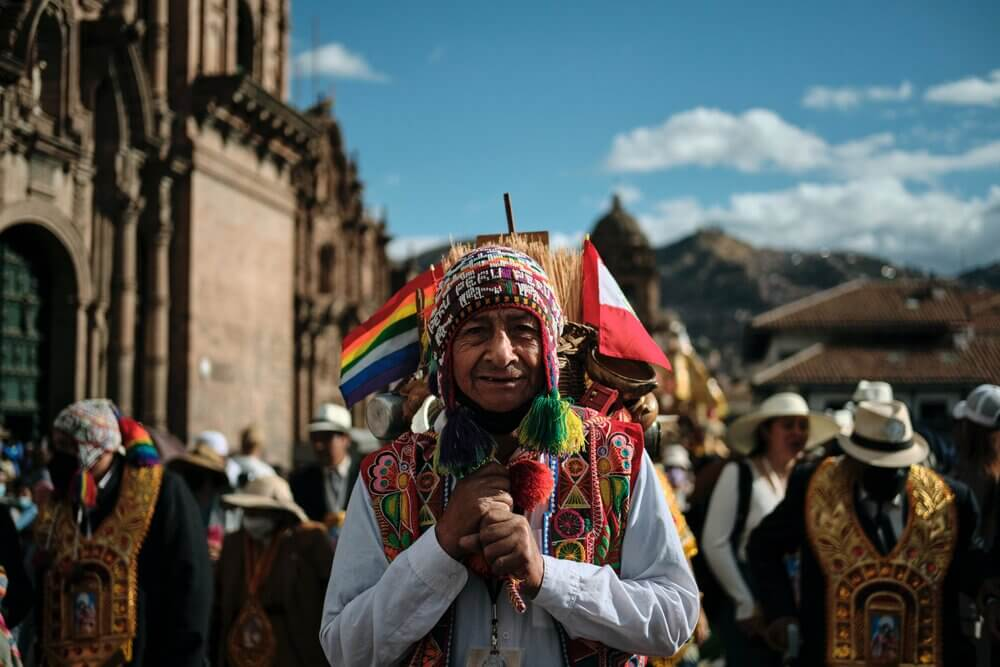

Cusco, World Heritage Site and Wonder of the World
Cusco is a historical and cultural city that was the capital of the Inca Empire and is currently the historical capital of Peru. Walking through its streets you can appreciate a combination of Andean and Spanish cultures. Among its main tourist attractions are the Main Square, the San Blas Neighborhood, the Temple of the Sun and the Inka Museum. Cusco is also the starting point to visit the sacred city of Machu Picchu following the Inca trail.

The Best Tourist Destination
For these and many reasons, Cusco is undoubtedly the best tourist destination for people who love culture, nature, and ancient history.